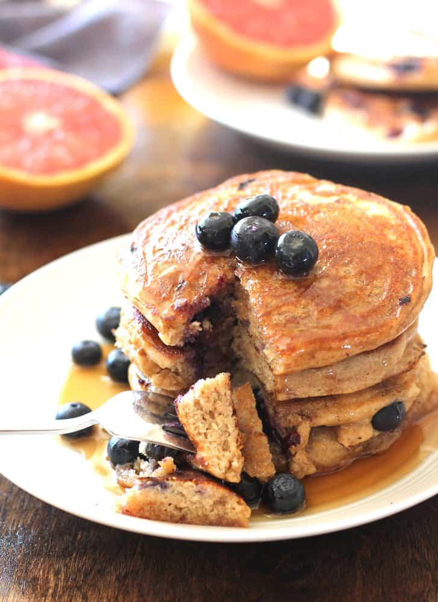

Blåbärspannkaka
God och spännande variant av den klassiska pannkakan. Blåbärspannkaka är ett mättande och uppskattat alternativ till lunch, middag eller kanske som mellanmål. Servera blåbärspannkakan med en klick vaniljglass.
Ingredienser
- 3 ägg
- 6 dl mjölk
- 2 1/2 dl vetemjöl
- 1 msk socker
- 1/2 tsk salt
- 300 g djupfrysta blåbär
- 1/2 dl florsocker
Gör så här
- Sätt ugnen på 200°C.
- Vispa ihop äggen och hälften av mjölken. Tillsätt mjölet och vispa till en klimpfri smet. Häll i resten av mjölken och tillsätt socker och salt.
- Häll smeten i en lätt smord långpanna, ca 30x40 cm (för 4 port). Strö på blåbären. Grädda i ca 25 min.
- Pudra över florsockret och servera blåbärspannkakan skuren i bitar med en klick vaniljglass.